Dulce de verdad
Vitrina llena de tortas y pasteles, copas de helado grandes, milkshakes y churros. Es lo que más nombran sus clientes.
Ver la carta →Av. Los Zapadores 1961 · Conchalí
Un jardín rosado con guirnaldas de luces, tortas de vitrina, copas de helado y waffles dulces y salados. Los siete días — entre semana desde las 17:00, y el fin de semana desde temprano.
Lunes a viernes desde las 17:00 · sábado desde las 10:00 · domingo desde las 12:00
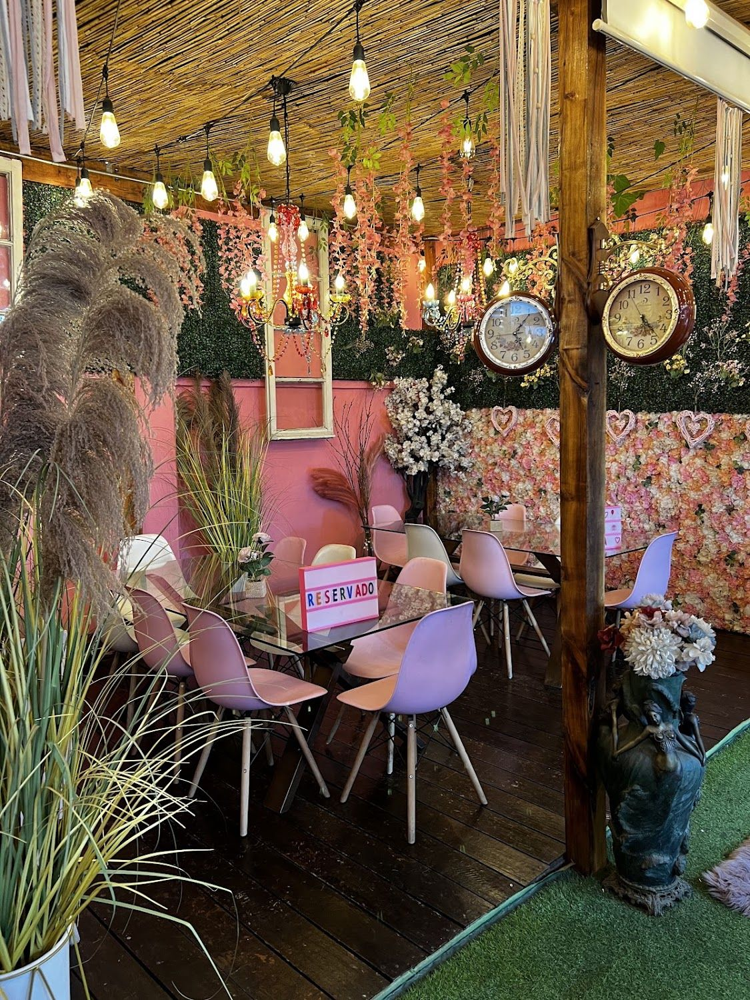
Vitrina llena de tortas y pasteles, copas de helado grandes, milkshakes y churros. Es lo que más nombran sus clientes.
Ver la carta →“Destaca mucho en la calidad y abundancia de sus platos, por ejemplo de sus waffles tanto dulces como salados.”
Leer reseñas →Música ambiental, flores, luces cálidas — y algún viernes, violinista en vivo. Lo cuentan sus propias reseñas.
Conocer el local →Nosotros
No es nuestra frase: es de una reseña de Google.
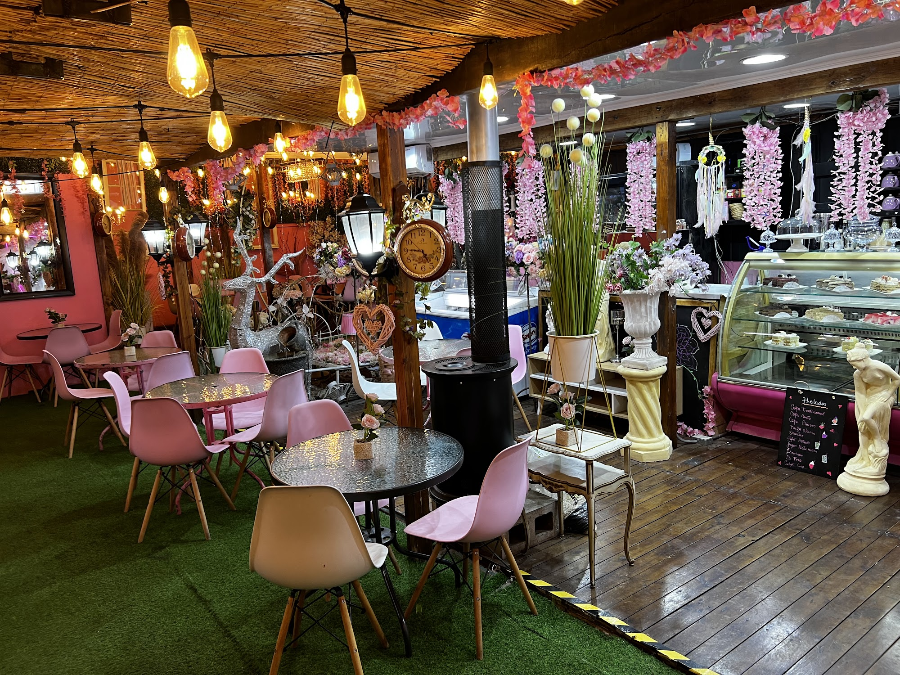
Sillas rosadas, césped en el piso, flores en cada mesa y guirnaldas de luces cálidas cruzando el techo. Beyka se armó para quedarse un rato, no para pasar rápido.
“Me encantó el lugar, hacía 1 año que no lo visitaba y si bien se mantiene su esencia estaba renovado, la música ambiental es muy agradable, mi madre estaba de cumpleaños y el dueño la saludo y nos atendieron muy bien, ella estaba feliz” Lourdes Sabel, en Google
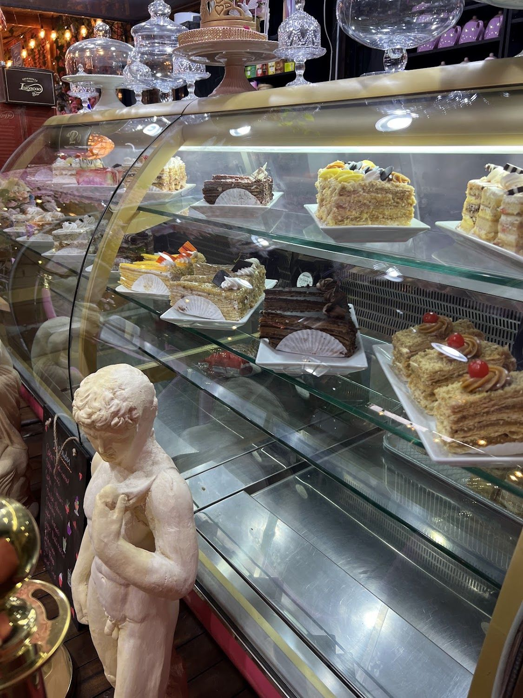
Beyka abre los siete días de la semana, incluido el domingo. De lunes a viernes parte a las 17:00 —es una cafetería de después del trabajo, de la tarde larga— y el fin de semana abre mucho antes: sábado desde las 10:00 y domingo desde las 12:00, según su propia bio de Instagram.
Lo que resume Google de sus 124 reseñas: tortas exquisitas, variedad de helados, buen café, ambiente acogedor y armonioso, y personal atento incluso cuando está lleno.
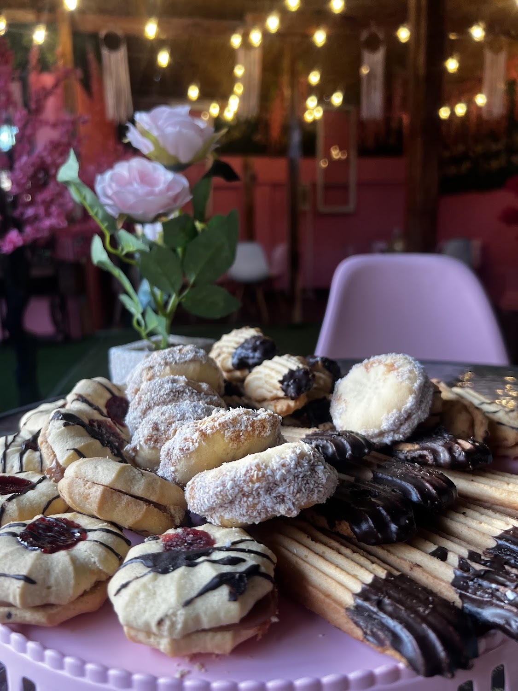
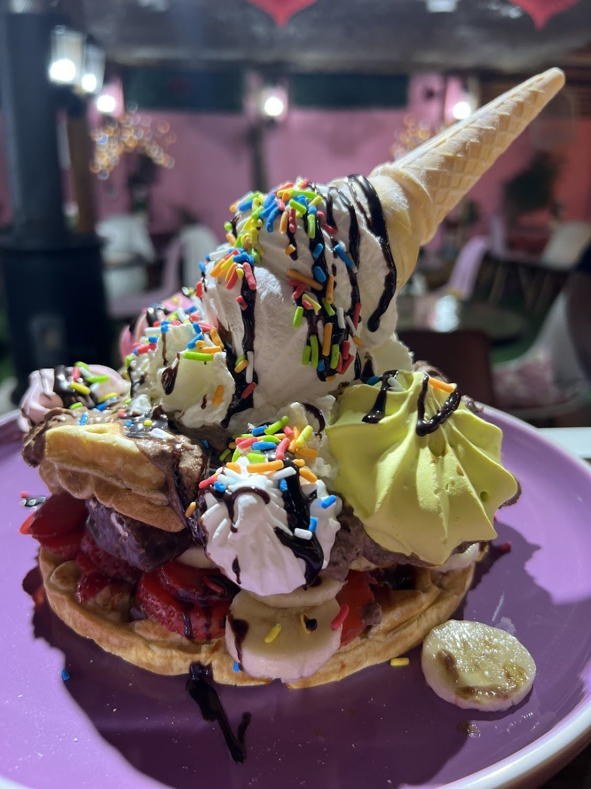
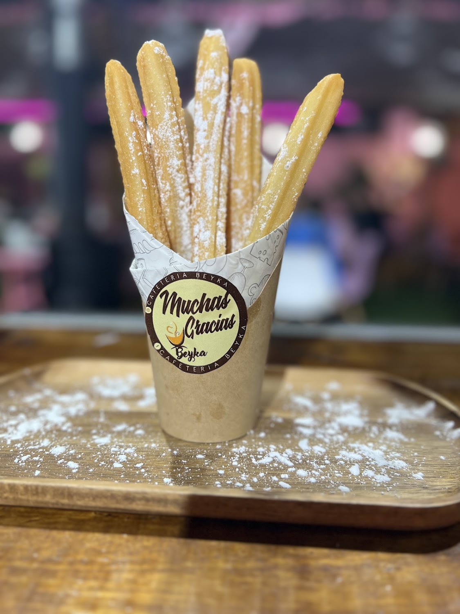
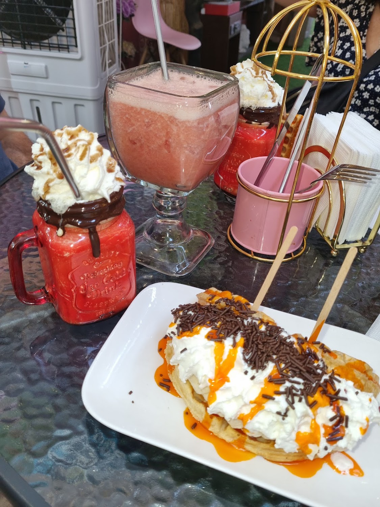
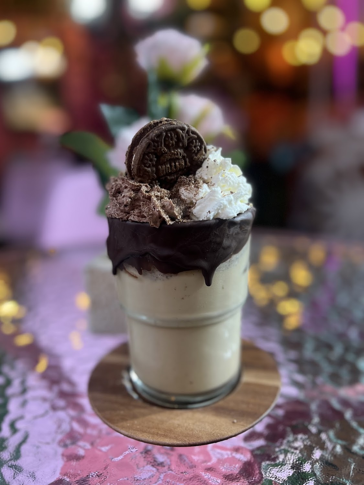
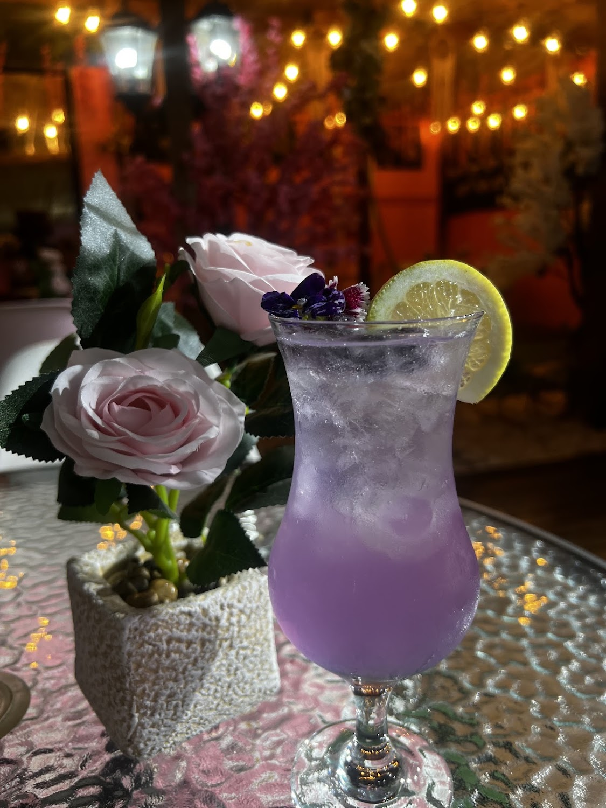
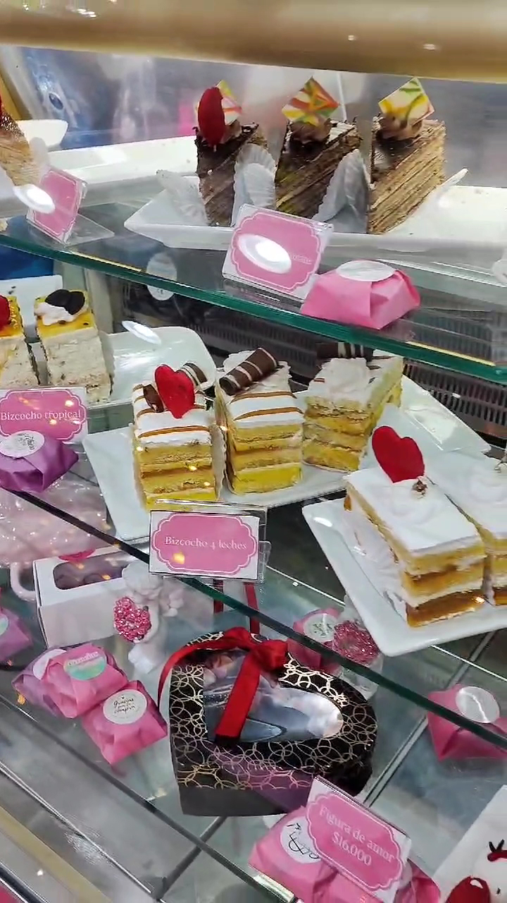
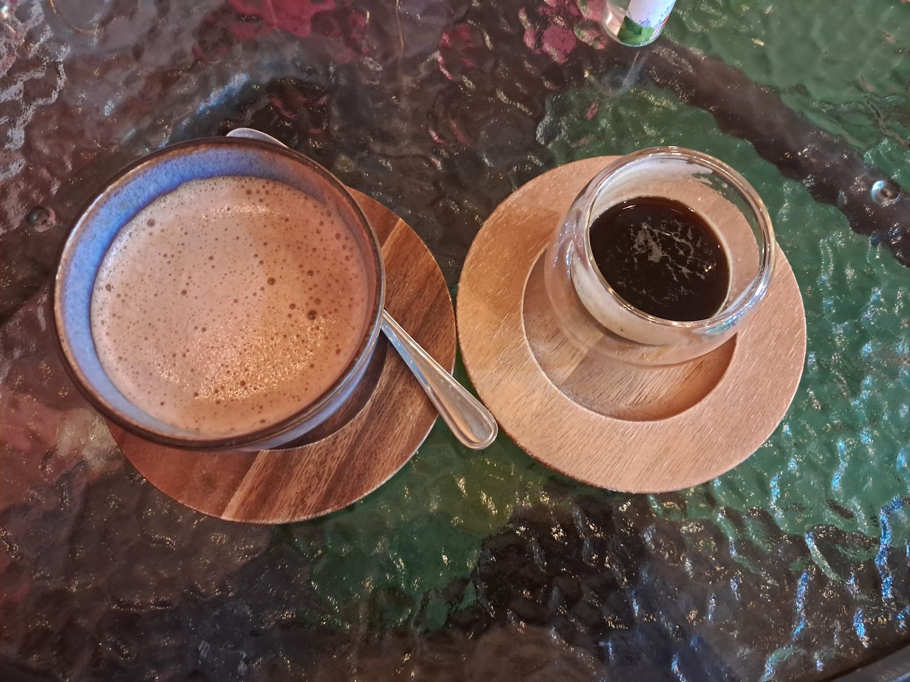
Todas las fotos son del propio local, de su ficha de Google Maps.
Carta
Productos reales, de su carta y de sus propias fotos.
La lista de bebestibles está transcrita de su carta impresa (fotos/carta.jpg). Conviene confirmar los precios al pedir.
Reseñas
Reales, copiadas tal cual de su ficha de Google Maps.
★★★★★
Excelente cafetería con una muy buena variedad de preparaciones, destaca mucho en la calidad y abundancia de sus platos como por ejemplo de sus Waffles tanto dulces como salados. Muy buena ambientación y siempre se agradece comer algo rico después del trabajo. Espero que sigan mejorando y que les vaya excelente.
★★★★★
Un ambiente acogedor, con excelente atención, exquisita variedad de platos dulces y salados. Este sandwich en pan italiano hecho aquí mismo es simplemente delicioso!!! Recomendadísimo.
★★★★★
Muy buen lugar, linda estética y platos deliciosos con porciones abundantes. Hoy viernes hubo violinista en vivo.
Redes
Sólo lo verificado. Ningún perfil inventado.
Fotos del local publicadas en su ficha de Google.
Su bio de Instagram dice "reservas" a este mismo número.
Ojo: el horario de su ficha no coincide con su bio.
Visítanos
Av. Los Zapadores 1961
Conchalí, Región Metropolitana
Plus Code J878+5Q
Lunes a viernes desde las 17:00 · sábado desde las 10:00
Horario de la bio de su propio Instagram (más reciente que Google). El viernes viene de su ficha de Maps, 15-09-2026.
Servicios declarados en su ficha de Google.